兵种微缩模型图标 · 选型稿
当前生产图标未切换。本页用四类代表兵种展示三套方向：战斗机 P-51、轰炸机 B-17G、重型坦克 IS-2、战列舰 Iowa。选定方向后，再按同一材质与光照批量制作全部兵种。
A · 军用目录写实
深色军械目录背景，金属和橄榄绿材质，边缘高光清楚，缩小到首页 20px 仍能辨认。
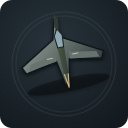
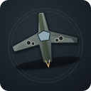
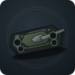
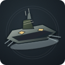
B · 沙盘微缩模型
温暖的沙盘底座和桌面模型光照，突出“微缩模型”质感，整体更亲和。
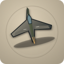
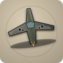
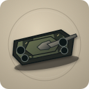
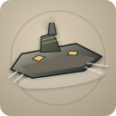
C · 海军蓝图档案
冷色海军蓝图背景，轮廓对比高，适合偏硬核、档案馆式的战争游戏界面。
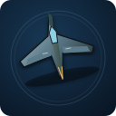
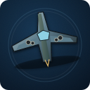
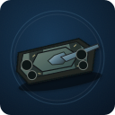
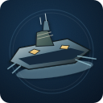
说明：这 12 张图标只放在 options 目录作为选型稿，未覆盖旧生产图标。确定方向后，我会用同一套规范补齐步兵、摩托兵、卡车、装甲车、轻坦、突击炮、火箭、侦察机、特种兵、运输机、驱逐舰、潜艇、航母等图标，并一次性切换首页映射。